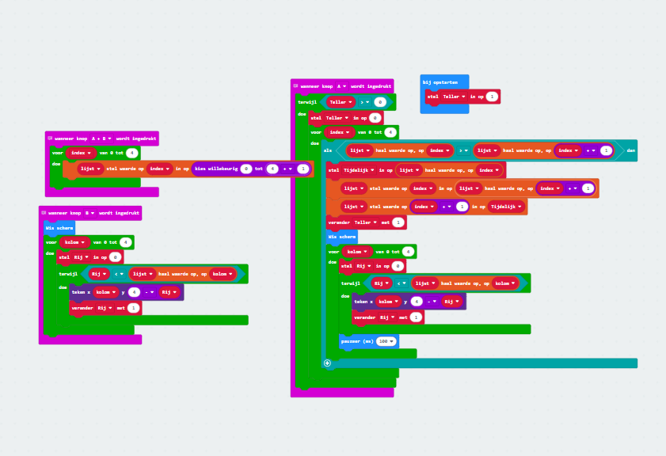
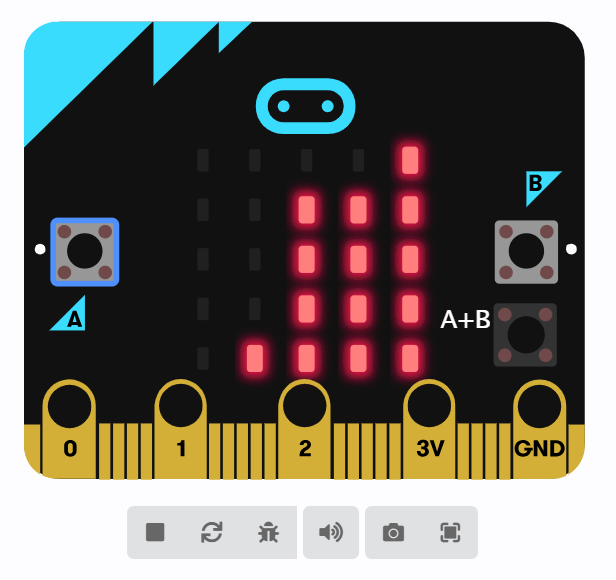

Deze les zijn we naar de makecode-site gegaan en hebben we een list machine geprogrammeerd.
Mijn code voor list.
Dit is mijn robot die zo kolommen tekent en organiseert.
Dit systeem geeft eigenlijk vorm aan het denken met een kleine microcontroller. Willekeurige getallen worden gegenereerd en deze getallen worden visueel weergegeven door LED's. Maar het gaat niet alleen om het inschakelen van de lampjes. Maar het gaat niet alleen om het aansteken van de lampjes... Elke kolom vertegenwoordigt een waarde, elk lampje een hoogte-eenheid. Dan begint het sorteren - net als het organiseren van de chaos in de menselijke geest. .